Guy Bourdin — overlay proofs
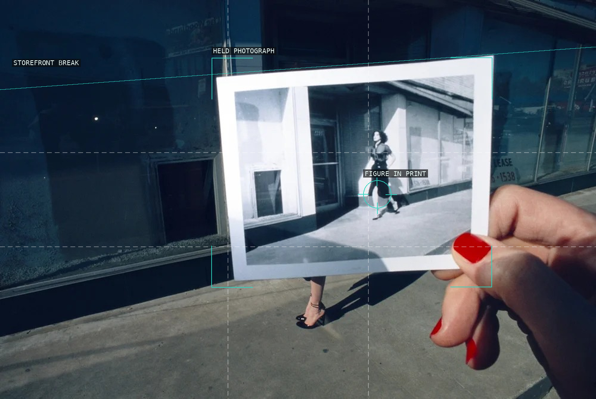
01 — Charles Jourdan campaign, held photograph
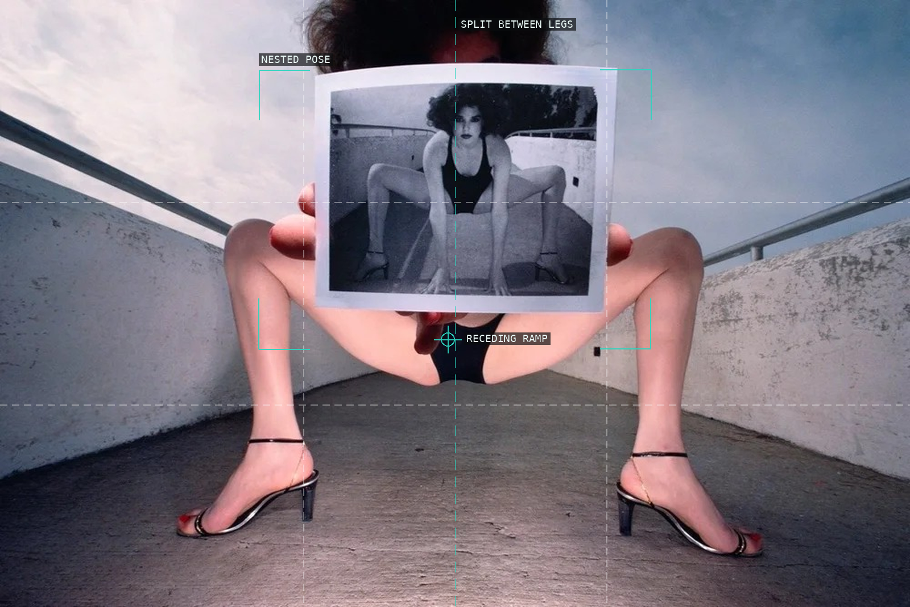
02 — Charles Jourdan campaign, nested pose
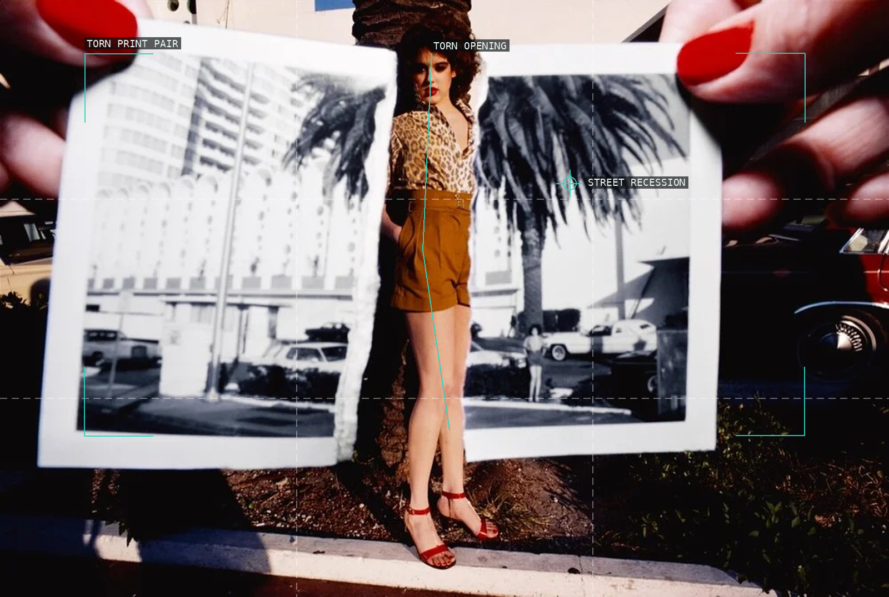
03 — Charles Jourdan campaign, torn print pair
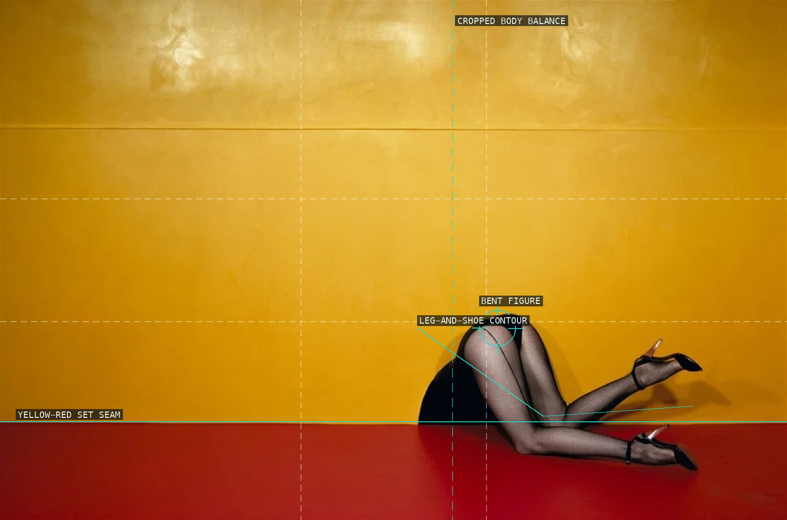
04 — Charles Jourdan campaign, cropped body
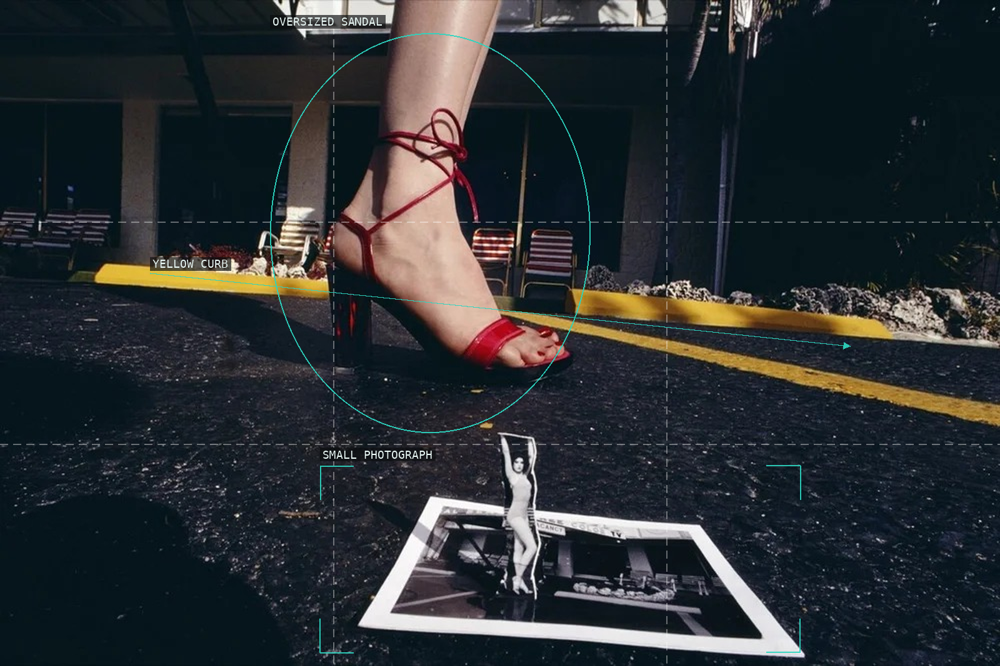
05 — Charles Jourdan, Spring 1978: sandal and photograph
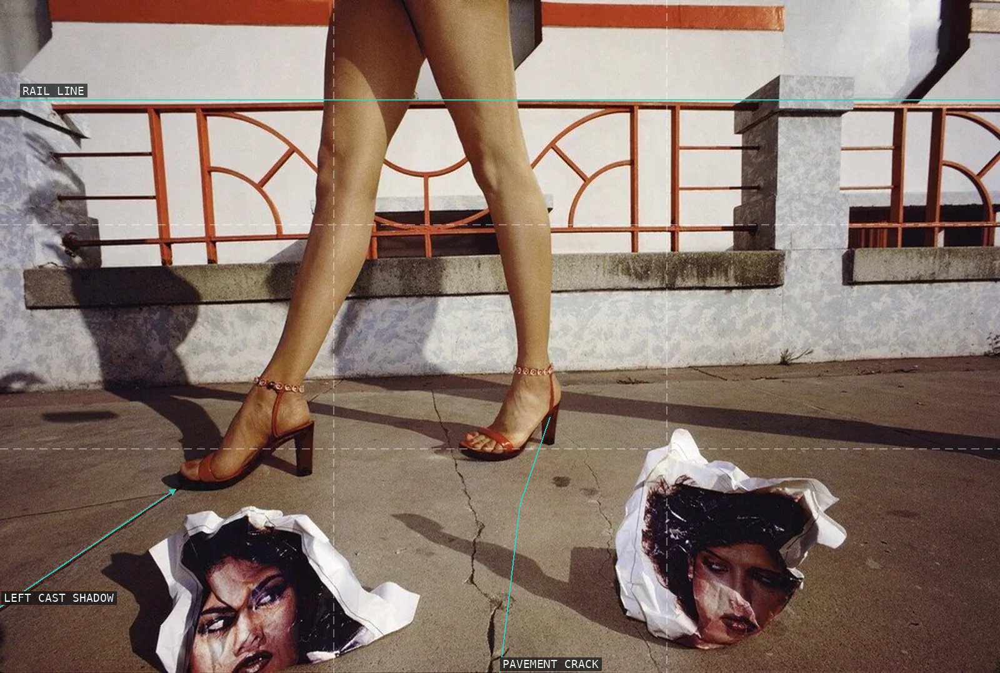
06 — Charles Jourdan, Spring 1978: pavement tableau
 07 — French Vogue, December 1969: necklace and brooch
07 — French Vogue, December 1969: necklace and brooch
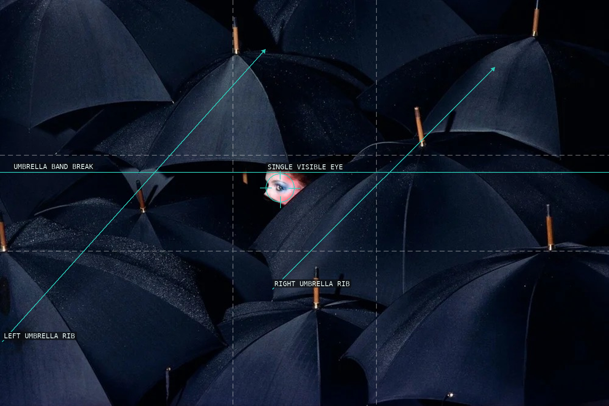
08 — French Vogue, December 1976–January 1977: umbrellas
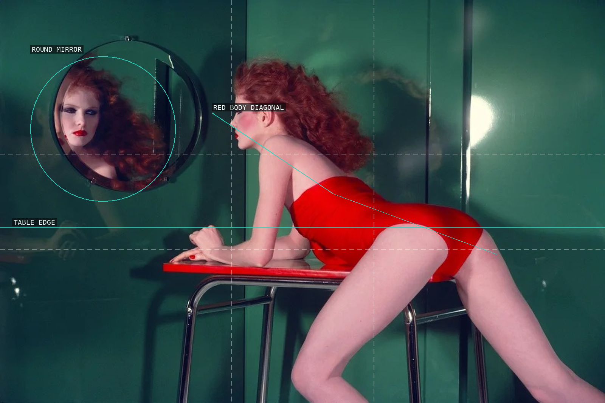
09 — French Vogue, May 1977: mirror and red figure
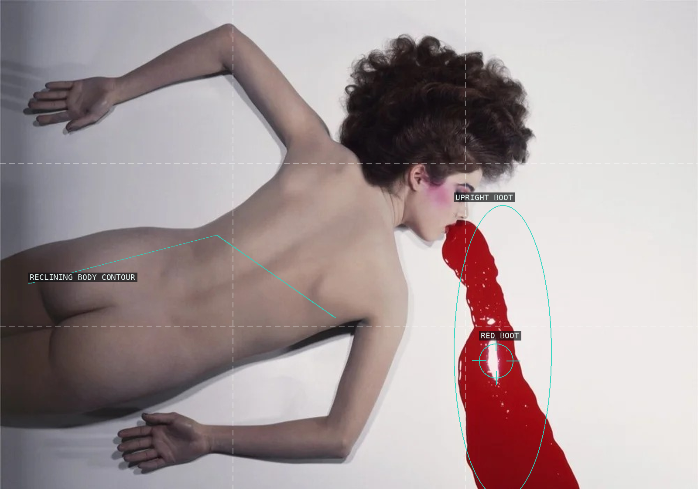
10 — Pentax Calendar, 1980: body and boot
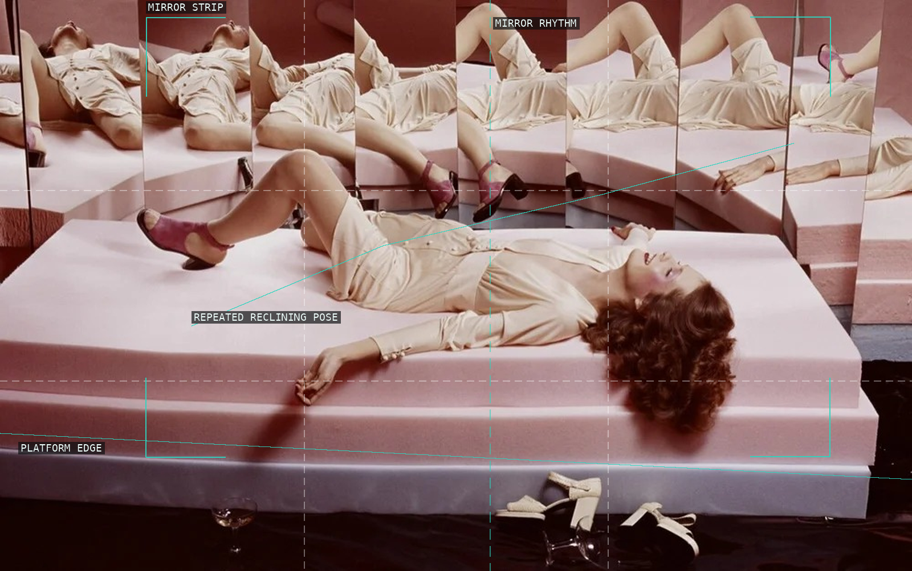
11 — French Vogue, March 1972: mirror panels
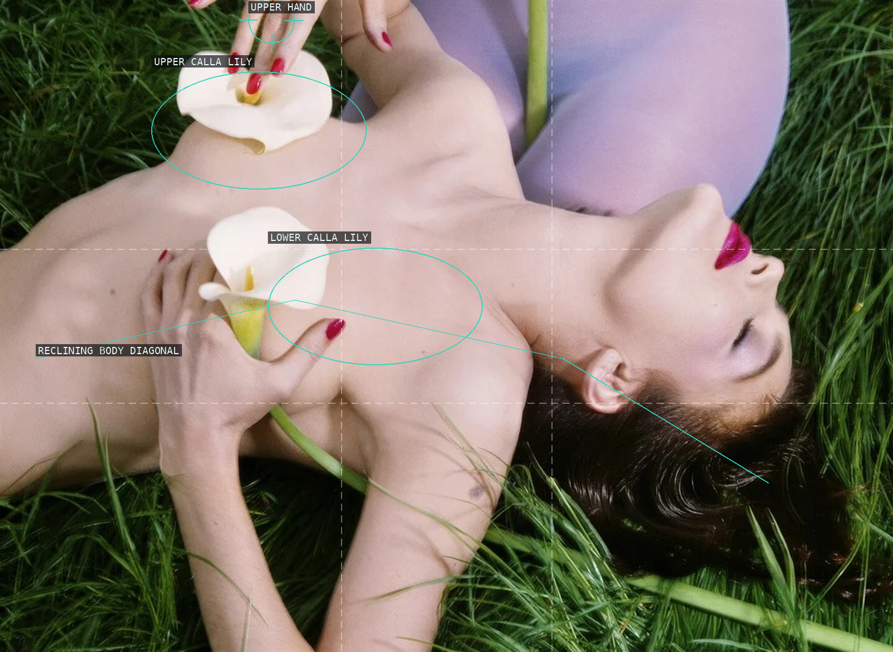
12 — Vogue France, October 1983: lilies in grass